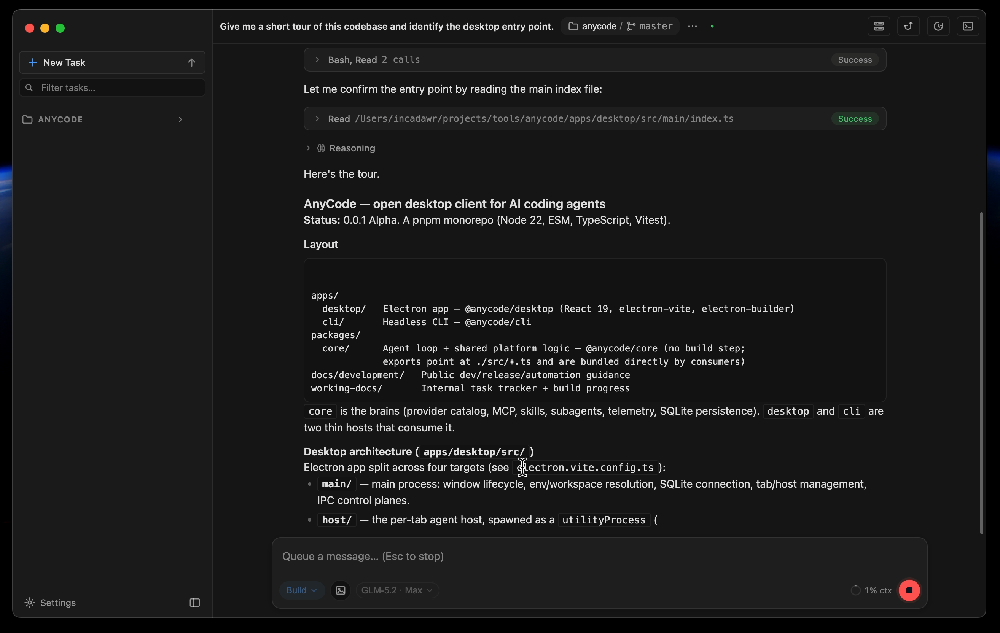

Разные окна
У каждого агента — свой интерфейс, история и способ показывать работу.
Desktop workspace for AI coding agents
AnyCode объединяет Claude Code, Codex и собственный multi-provider runtime в одном рабочем пространстве.
Проблема
У каждого агента — свой интерфейс, история и способ показывать работу.
Права, режимы, контекст и подтверждения приходится изучать заново.
Переключение движка означает потерю привычного workspace и контроля.
Решение
Выбирайте движок под задачу. Интерфейс, проект и прозрачность работы остаются прежними.
Собственный agent loop с Anthropic-, OpenAI-compatible и локальными провайдерами.
Официальный Codex CLI через app-server: аккаунты, квоты, планы и импорт сессий.
Официальный Claude Code CLI в headless-режиме: reasoning, tools, images и resume.
Продукт

Архитектура
01 · Renderer
02 · Host
03 · Engine
Одинаково для каждого движка
Ответ, reasoning и действия собираются в читаемую историю.
Рискованные действия не прячутся за абстрактным «авто».
Команды, файлы и результат остаются в контексте проекта.
Использование окна и квоты показываются там, где это возможно.
Инструменты расширяют среду, а не привязывают её к одному вендору.
Дочерний агент может работать на другом движке и модели.
Файлы и diff доступны без ухода в отдельную IDE.
Картинки и созданные файлы видны прямо в диалоге.
Безопасность — архитектура, не настройка
CLI-профили запускаются локально под вашим аккаунтом. AnyCode не проксирует их credentials.
Renderer отделён от Node и секретов; у каждой вкладки собственный host-процесс.
Возможности показываются честно: неподдерживаемое действие отключено, а не имитируется.
Адаптеры CLI проверяются на записанных protocol fixtures, чтобы не терять wire-события.
Сейчас
Универсальное preview, first-class MCP, переключение движка внутри сессии и multi-agent orchestration.
Apache-2.0 · Bring your own agent · Local-first